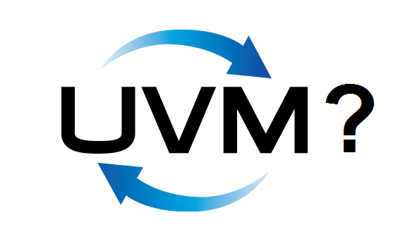

Who’s Using UVM (or Not) for FPGA Development, and Why?¶
Originally posted and commented on LinkedIn.
Over the last few years a number of open source test solutions have emerged. I’m talking about tools like our VUnit but also others like OSVVM, Cocotb, BVUL, and SVUnit. The people developing these tools all had the question:
Why are you doing this? Why not use UVM?
These questions often come from people promoting UVM so it becomes a discussion among people heavily involved in one solution or the other. This time I would like to hear the opinions of the larger community. Why did you decide to use UVM for your FPGA development? Why did you decide not to? Maybe you’re using UVM for parts of the testing but not all?
All tools can be used for ASIC development but I think the question is more interesting when talking about FPGAs so let’s focus on that for now. I welcome the people developing these tools to answer as well but please state who you are.